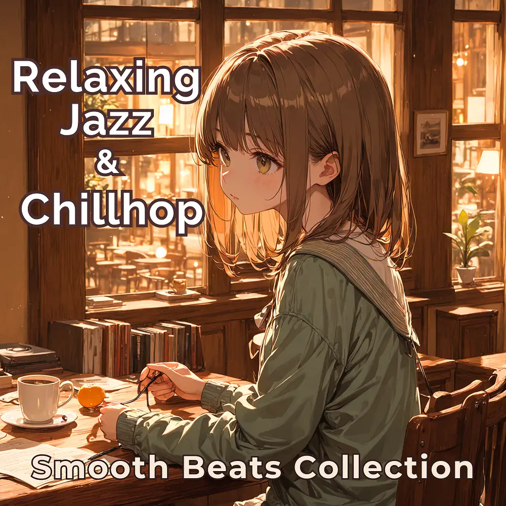

Jazz · Chillhop
Relaxing Jazz & Chillhop: Smooth Beats Collection
Nanashino-chan
Explore Relaxing Jazz & Chillhop: Smooth Beats Collection by Nanashino-chan: 27 instrumental tracks spanning Jazz / Chillhop. Start with Morning Jazz Flow / Cozy Sunset, preview the collection and find your favorites on streaming services.
2025-04-08 · Released · 27 tracks · Instrumental
Preview the album
The jacket stays here until you choose a track. Playback uses YouTube.
YOUTUBE PREVIEW
Choose a track to listen
The jacket stays here until you choose a track. Playback uses YouTube.
If playback is unavailable, open the album or track on the streaming service.
Find this album on streaming services
Links marked “search” open search results. Select the album or track on the service.
Track list 27
- 01Morning Jazz Flow
- 02Cozy Sunset
- 03Midnight Breeze
- 04Starlit Groove
- 05Gentle Reflections
- 06Coffeehouse Rhythm
- 07Dreamy Sax Vibes
- 08Soft Rain Melodies
- 09Velvet Nightfall
- 10Urban Dreamscape
- 11Tranquil Horizons
- 12Peaceful Echoes
- 13Echoes of Serenity
- 14Whispering Winds
- 15Mellow Moments
- 16Golden Hour Chill
- 17Floating Chords
- 18Moonlit Groove
- 19Deep Soul Vibes
- 20Jazzy Clouds
- 21Breezy Vibes
- 22Silent Reflections
- 23Late Night Feels
- 24Quiet Conversations
- 25Serene Frequencies
- 26Lo-Fi Serenade
- 27Last Call Jazz
Find a sound for your next post
Copy “Nanashino-chan + track title” and paste it into your social app’s music search. Availability depends on your region and account. Copying the name does not grant usage rights.